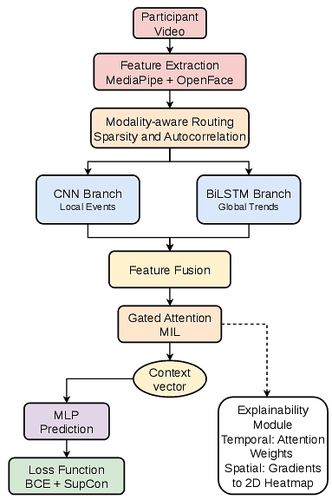
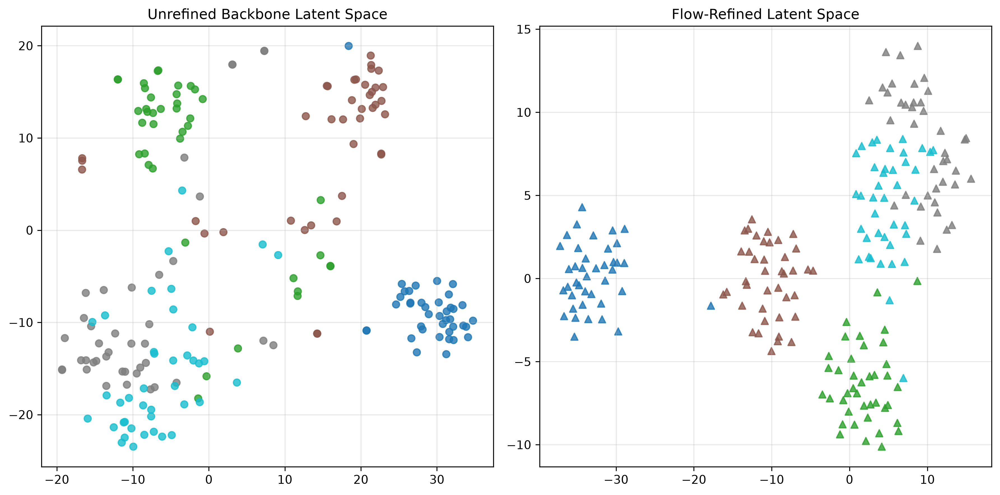
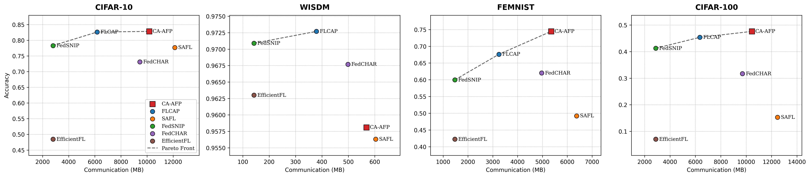
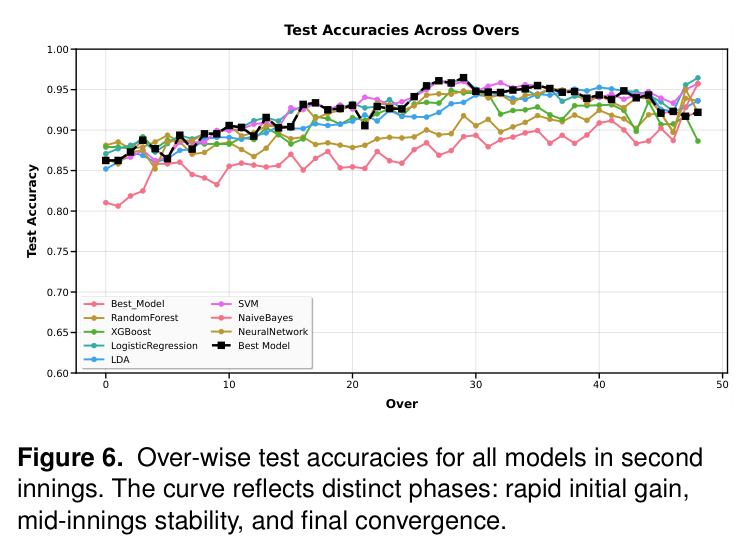
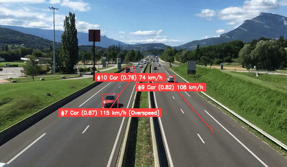
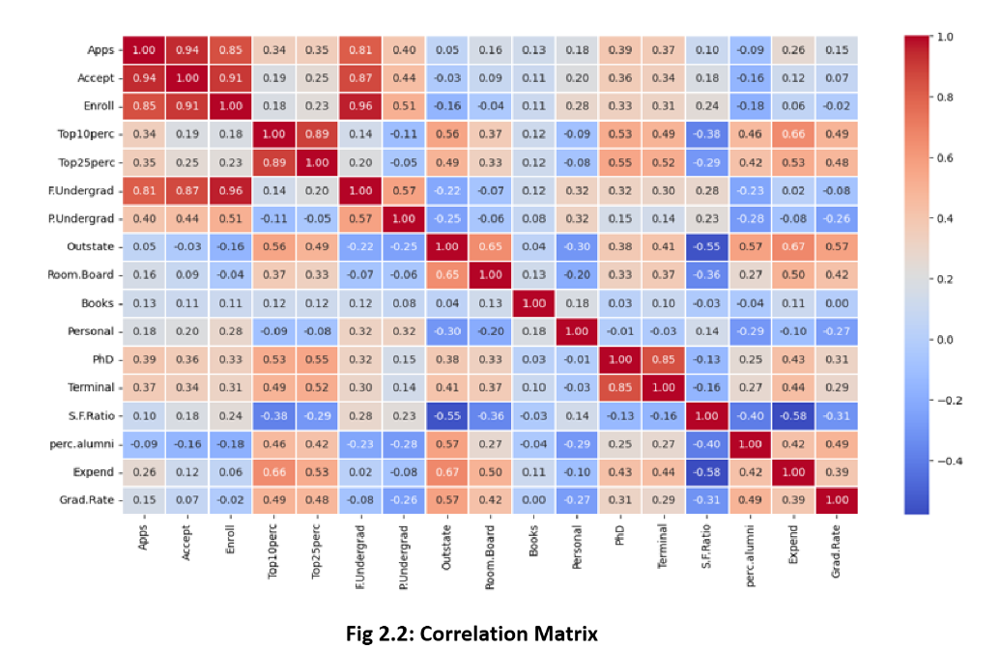
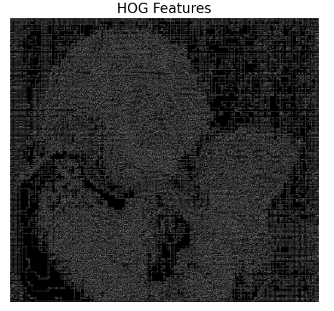
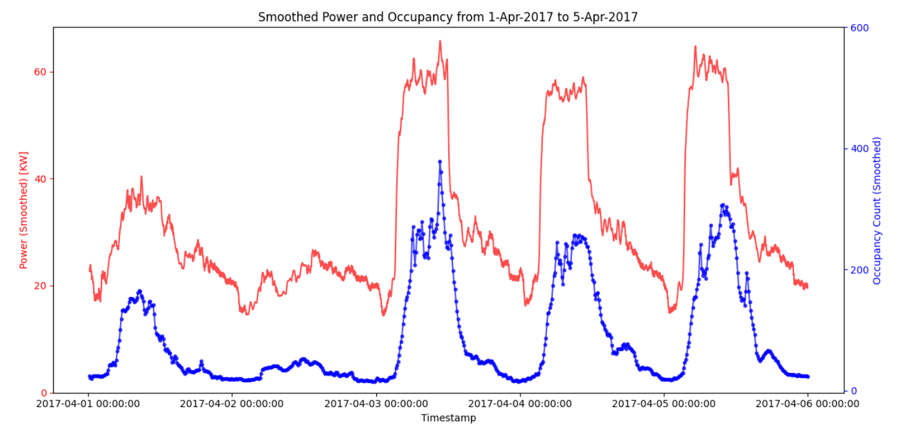

About Me
I am a Computer Science & Engineering student with interest in deep learning, multimodal computing, federated learning and applied statistics. I completed my Bachelor of Science in Computer Science and Engineering with a Minor in Data Science at the Indian Institute of Science Education and Research (IISER), Bhopal, and am pursuing my Master of Technology in Robotics and Autonomous Systems at the Indian Institute of Science (IISc), Bengaluru.
My research focuses on developing theoretically grounded, computationally efficient, and interpretable machine learning models for complex high-dimensional systems. My primary areas of investigation include:
- Multimodal Learning & Affective Computing: Designing modality-aware neural architectures and Multiple Instance Learning (MIL) formulations to model heterogeneous behavioral dynamics (e.g., automated clinical distress and anxiety assessment, published at ACM ICMI '26).
- Continuous Generative Modeling & Flow Matching: Formulating teacher-guided conditional vector fields and simulation-free flow matching as feature-space regularizers for robust latent representation learning (accepted at NLDL 2027).
- Efficient Edge AI & Clustered Federated Learning: Dynamic sparse parameter exploration ("Prune-and-Heal") and trajectory-cosine client clustering to address system and non-IID data heterogeneity under strict resource constraints (under submission at ACM IKDD CoDS-COMAD 2026).
- Interpretable Machine Learning & Applied Optimization: Inning-dependent dynamic modeling and game-theoretic SHAP explainability in sports analytics (under revision at SAGE IJSSC), as well as minimax convex optimization for epidemiological surveillance during my summer research fellowship at IISc Bengaluru.
I have had the opportunity to conduct research across premier academic institutions, including the Indian Institute of Science (IISc), Bengaluru (as an INSA-IASc-NASI Summer Research Fellow under Dr. Rajesh Sundaresan) and the Indian Institute of Technology (IIT) Guwahati (under Dr. Ayon Borthakur).
Feel free to explore my works in the project section, or reach out to connect!
Projects
Modeling Affective Distress from Video: A Modality-Aware Multi-Branch Learning Approach
Published in Proceedings of the 28th ACM International Conference on Multimodal Interaction (ICMI '26)
Automated detection of mental health conditions such as stress and Social Anxiety Disorder (SAD) from clinical interview video feeds presents severe challenges because affective distress manifests as both rapid, localized micro-expressions and sustained behavioral trends. Whereas conventional methods process heterogeneous behavioral cues through a single sequential encoder—leading to signal distortion—we propose a Multi-Branch Modality-Aware Multiple Instance Learning (MIL) framework that explicitly disentangles behavioral signals based on their temporal dynamics.
High-variance, sparse facial Action Units (extracted via OpenFace) are routed to a 1D CNN branch to capture localized micro-events, while continuous, autocorrelated postural landmarks and gaze vectors (extracted via MediaPipe) are routed to a Bidirectional LSTM branch to capture gradual behavioral trajectories. Window-level representations are unified via gated attention MIL into interpretable participant-level predictions. Trained with joint Binary Cross-Entropy and Supervised Contrastive losses, the architecture features gradient-based spatial saliency mapping to 2D video heatmaps and achieves 71.04% accuracy on a clinical Trier Social Stress Test (TSST) interview benchmark, with competitive cross-dataset generalization across StressID, UBFC-Phys, and AVEC 2017.

Teacher-Guided Discriminative Flow Matching for Latent Representation Learning
Accepted at Northern Lights Deep Learning Conference (NLDL 2027)
This research introduces DFM (Discriminative Flow Matching), investigating whether a teacher-guided latent vector field can serve as an effective feature-space regularizer for discriminative visual representation learning. Rather than transporting features from an arbitrary noise prior or matching generic class prototypes, DFM pairs a strongly augmented student view with a weakly augmented view from an Exponential Moving Average (EMA) teacher network, modeling sample-specific latent displacement along linear probability paths.
We train a conditional neural vector field conditioned on the current state, original student state, and interpolation time to predict the velocity required to traverse the displacement path (stabilized with target velocity norm clipping). A sample-dependent learned scalar gate dynamically scales the residual velocity update, while a joint training objective optimizes classification on both unrefined student and refined representations, flow-matching regression, and stop-gradient teacher endpoint transport. On CIFAR-100, DFM elevates baseline top-1 accuracy from 68.23% to 69.26% on the unrefined backbone and 69.38% with one-step refinement, while transferring effectively to pretrained Tiny-ImageNet (top-1 from 63.04% to 63.50%, top-5 from 84.98% to 85.99%) and demonstrating significantly tighter class-centroid clustering, lower Expected Calibration Error (ECE), and superior corruption robustness (CIFAR-100-C).
Camera-ready / preprint available upon request (proceedings to appear).

CA-AFP: Cluster-Aware Adaptive Federated Pruning for Heterogeneous FL
Under Submission at ACM IKDD CoDS-COMAD 2026
Federated learning across real-world edge devices must accommodate non-IID client data distributions while minimizing communication and compute bottlenecks. Existing sparse FL methods impose a uniform, shared network topology across all participants, constraining heterogeneous client groups from adapting their layer-wise connectivity to their specific data distributions. We propose CA-AFP (Cluster-Aware Adaptive Federated Pruning), a clustered dynamic sparse FL framework that enables client groups to independently evolve specialized sparse network topologies under a common resource budget.
CA-AFP first clusters participating clients based on the cosine similarity of their accumulated optimization trajectories and subsequently conducts adaptive magnitude-based pruning and gradient-guided parameter regrowth independently within each cluster. We empirically analyze the structural evolution of sparse topologies across training—demonstrating that client clusters develop specialized layer-wise sparse connectivity patterns (particularly in later network layers) rather than merely diverging in weight values. Evaluated across four heterogeneous FL benchmarks (CIFAR-10, CIFAR-100, FEMNIST, and WISDM) under a matched 70% parameter sparsity budget, CA-AFP achieves the highest accuracy among sparse baselines on CIFAR-10, FEMNIST, and CIFAR-100, significantly accelerates early-stage convergence, and provides a Pareto-optimal accuracy-to-communication trade-off.

Predictive Modeling in ODI Cricket: Training Strategy, Feature Engineering, & Explainability
Under Review (Revision Stage) at International Journal of Sports Science & Coaching (SAGE Publications)
Predicting the outcome of One Day International (ODI) cricket matches is exceptionally challenging due to high variance and innings-dependent game dynamics. This paper introduces a comprehensive machine learning framework trained on 1,394 international ODI matches (2002–2024). To eliminate temporal data leakage and ensure realistic real-world deployment, we formulate a strict chronological expanding-window training and evaluation pipeline.
We engineer inning-specific static features (team relative strength metrics, venue characteristics, toss decision) alongside granular dynamic features (cumulative runs, required run-rate gap, wickets in hand, and pressure indices). We systematically compare two distinct modeling paradigms across Logistic Regression, SVM, Random Forest, XGBoost, Naive Bayes, and Neural Networks: a 'Unified Inning Model' trained across all overs, versus an 'Over-Wise Model' trained independently for each over. Our analysis proves that feature effectiveness is maximized by a hybrid strategy: the Unified Inning Model is decisively superior for the 1st innings where match outcome correlates steadily with cumulative run rate and team priors; conversely, the Over-Wise Model Switching strategy is decisively superior for the 2nd innings, capturing non-linear chasing volatility and achieving an outstanding 84.6% prediction accuracy. Game-theoretic SHAP interpretability analysis quantitatively decodes the dynamic transition of feature attribution across match phases.

Vehicle detection and speed tracking
The purpose of this project was to build an automated system for monitoring traffic flow and enforcing speed limits. By training a YOLOv8 model, we achieved real-time vehicle detection and classification from video feeds. The system uses perspective transformation to accurately calculate the speed of each vehicle as it passes through a user-defined zone. This technology is highly valuable for intelligent traffic management systems, enhancing road safety and surveillance capabilities.

Dimensionality Reduction Analysis
High-dimensional data can be computationally expensive and difficult to interpret. This project provides a comparative analysis of key dimensionality reduction techniques like PCA, LDA, and t-SNE. We applied these algorithms to various datasets to evaluate their effectiveness in preserving important data structures while reducing complexity. The work serves as a practical guide for selecting the appropriate technique for feature extraction and data visualization in machine learning workflows.

Crater and Boulder Detection on Planetary Surfaces
This project automates the identification of geological features from planetary images, a critical task for rover navigation and scientific analysis. We implemented a computer vision pipeline using the Canny edge detector and Circular Hough Transform to accurately locate craters and boulders. This automated approach is far more efficient than manual analysis, enabling faster mapping of extraterrestrial surfaces and aiding in the selection of safe landing sites for future missions.

Image Analysis with SIFT, BoW, and HOG
This project delves into classical feature-based image classification methods. We implemented the Scale-Invariant Feature Transform (SIFT) to extract robust keypoints from images, which were then clustered into a "Bag of Visual Words" (BoW). By creating histograms from these visual words, alongside Histogram of Oriented Gradients (HOG) features, we built a powerful model for classifying images. This work is fundamental to understanding the building blocks of many modern computer vision systems.

Data Visualisation: Energy, Occupancy, and Weather
The goal of this project was to uncover hidden patterns and relationships within complex, multi-source datasets. By merging and visualizing data on energy consumption, building occupancy, and corresponding weather conditions, we aimed to identify key factors influencing energy usage. This type of analysis is crucial for developing smarter, more efficient energy management systems and promoting sustainable building practices through data-driven insights.

Optimal Design of Serosurveys during Pandemic
Under the supervision of Dr. Rajesh Sundaresan at IISc Bengaluru, this project focused on the optimal design of serosurveys for disease burden estimation. The work involved determining how to best distribute a budget for various tests to accurately estimate disease prevalence. Key concepts studied include Maximum Likelihood Estimators, the Fisher Information matrix, Convex Optimisation, and Game-Theoretic approaches.
Achievements & Responsibilities
- Reliance Foundation Scholarship (2022-2026)
- Teaching Assistant for "Data Science in Practice" (2025)
- INSA-IASC-NASI Summer Research Fellow at IISc Bengaluru (2024)
- Coordinator: Economics Club, IISER Bhopal (2024-25)
- Qualified JEE-Advanced (2022-2023)
- Secured All India Rank 98 in IMU-CET examination (2022)
- Qualified NDA-149 examination (2021)
Education
M.Tech in Robotics and Autonomous Systems (2026 - 2028)
Indian Institute of Science (IISc), Bengaluru
Focus Areas: Autonomous Robotics, Robot Perception, State Estimation & Control
BS in Computer Science and Engineering, Minor in Data Science (Dec 2022 - May 2026)
Indian Institute of Science Education and Research (IISER), Bhopal
CPI: 8.72 / 10.0
All India Senior School Certificate Examination (2022)
Chinmaya Vidyalaya Bokaro Steel City, Jharkhand
Score: 94.2%
All India Secondary School Examination (2020)
DAV Public School Jhanjharpur, Bihar
Score: 96.4%